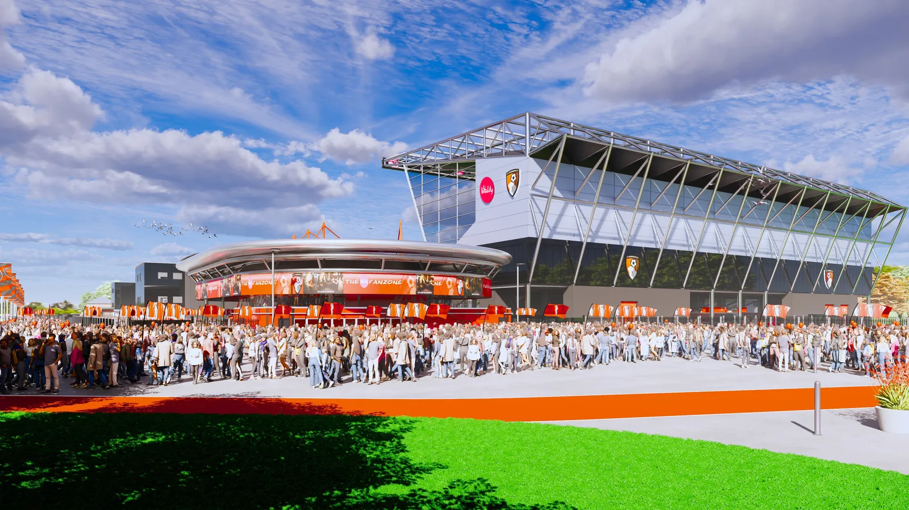
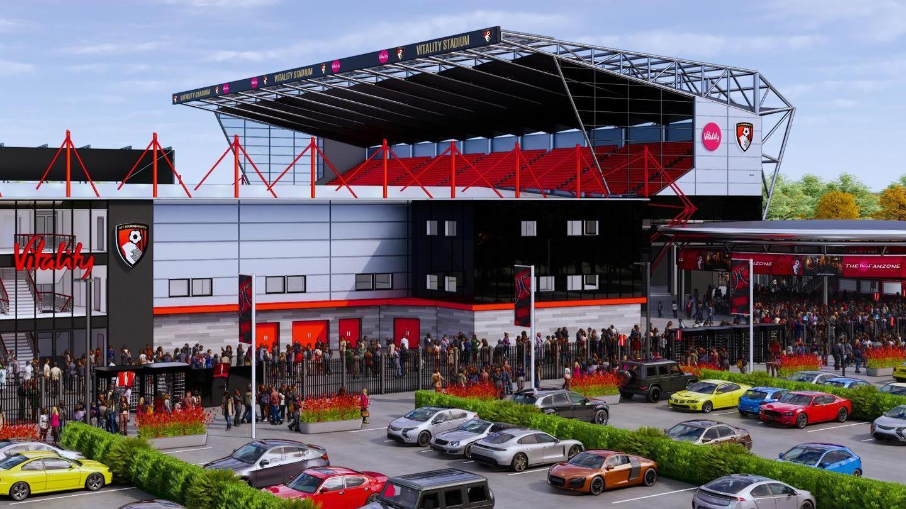

Whistle Football Club can confirm major redevelopment plans for our stadium. We are delighted to announce we have agreed a new sponsorship deal with Vitality which will see the ground renamed the Vitality Stadium. We want to place on record our appreciation for the support Mornflake have provided us over the last few seasons as we have climbed up the leagues.
As part of the new sponsorship agreement, the club are pleased to reveal further plans for the redevelopment of our home, with major work set to take place over the upcoming 2026 off-season. The programme aims to expand capacity, modernise facilities, and enhance the matchday experience for supporters.

The Vision and the Plan
The redevelopment includes demolition of the existing South Stand to make way for a new 7,000-seat grandstand, corner infills to increase general admission capacity by approximately 1,440 seats, vertical and horizontal expansion of the North and East Stands, and the creation of a new fan zone.
- New stadium perimeter fence line with relocated turnstiles
- Relocated ticket office at the new perimeter
- Partial rerouting of pedestrian and cycle routes
- Optimised car and cycle parking layout
- New outside broadcasting (OB) area
- Relocated floodlights and enhanced media facilities
Internal refurbishments of the East and West Stands will introduce three new hospitality spaces, while the South Stand upper tier will continue construction into the 2026/27 season. Full redevelopment is expected to increase overall stadium capacity to approximately 20,200 by 2027.

Official Statements
The Wetshil Council has expressed its support for the club’s plans. Council Cabinet Member for Destination, Leisure and Commercial Operations, Cllr Rich Herrett, said:
“The Council recognises how valuable Whistle FC is to Wetshil and the surrounding communities. We look forward to working with the club to improve the matchday experience for fans at Vitality Stadium via the appropriate planning and democratic processes.”
Club owner Oliver Wilkinson added:
“This redevelopment represents a huge step forward for Whistle FC. We want our supporters to enjoy modern facilities while we continue to build towards a sustainable future for the club.”
CEO Martin Thrush highlighted the importance of careful planning:
“Every phase of this project has been carefully designed to minimise disruption while maximising benefits. Fans will see real improvements on and off the pitch.”
Head Coach Johannes Hoff Thorup also welcomed the plans, emphasising the impact on the team and community:
“A modern stadium inspires both players and supporters. Vitality Stadium will continue to be a fortress for The Whistlers while accommodating our growing fanbase.”
Construction Timeline
The redevelopment will proceed in phases, subject to planning approval:
- Close of 2025/26 season: Demolition of the South Stand
- Construction of new 3,000-seat lower tier South Stand
- Infilling South-East and North-West corners
- Internal refurbishment of East and West Stands, including hospitality spaces
- Construction of South Stand upper tier to continue into 2026/27
- North and East Stand extensions and remaining corner infills in 2027
Supporters are encouraged to follow updates via the club website and official channels throughout the redevelopment process.
Whistle FC is committed to ensuring that the Vitality Stadium remains a community hub and a home for exciting football for decades to come.